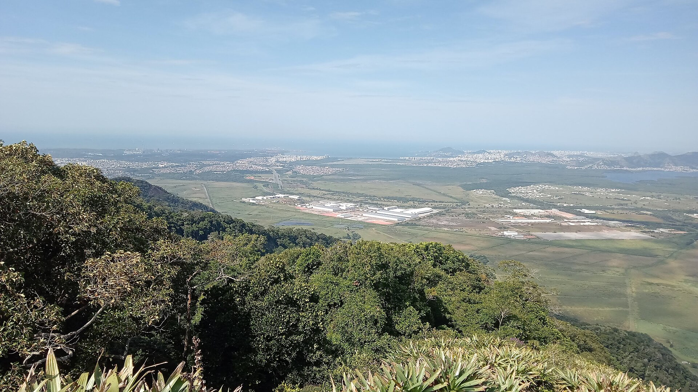

|
Aula 07 - Cidades do Espírito Santo |
|---|
O Espírito Santo é um estado localizado na região sudeste do Brasil,
conhecido por suas belas praias, montanhas e rica cultura. Algumas das
principais cidades do estado incluem Vitória, Vila Velha, Guarapari e
Cachoeiro de Itapemirim.
Abaixo temos alguns dos municípios do Espírito Santo
Clique nas imagens para mais informações
Para saber mais clique aqui

Para saber mais clique aqui
Para saber mais clique aqui

Para saber mais clique aqui
Para saber mais clique aqui